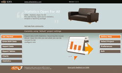
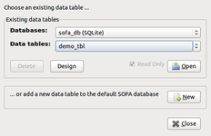
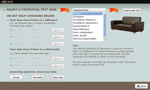
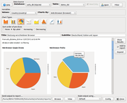

Statistics Open For All
Dieser Artikel wurde für die folgenden Ubuntu-Versionen getestet:
Ubuntu 16.04 Xenial Xerus
Ubuntu 14.04 Trusty Tahr
Zum Verständnis dieses Artikels sind folgende Seiten hilfreich:
Statistics Open For All  – kurz SOFA – ist ein plattformübergreifendes Statistik-Programm, das verspricht, einen besonders einfachen Zugang zum Thema zu bieten. In der Umsetzung ist dieser Ansatz durchaus gelungen. Allerdings richtet sich das Programm dann doch wieder an Akademiker bzw. erfordert Sprachkenntnisse: die Programmoberfläche sowie sämtliche Anleitungen und Beispielvideos sind auf Englisch (Anmerkung: es werden noch Helfer für eine Übersetzung gesucht). Dafür sind die grafisch aufbereiteten Ausgaben, die sich bequem mit der Maus zusammenklicken lassen, eine willkommene Alternative zu kommerziellen Programmen wie beispielsweise SPSS.
– kurz SOFA – ist ein plattformübergreifendes Statistik-Programm, das verspricht, einen besonders einfachen Zugang zum Thema zu bieten. In der Umsetzung ist dieser Ansatz durchaus gelungen. Allerdings richtet sich das Programm dann doch wieder an Akademiker bzw. erfordert Sprachkenntnisse: die Programmoberfläche sowie sämtliche Anleitungen und Beispielvideos sind auf Englisch (Anmerkung: es werden noch Helfer für eine Übersetzung gesucht). Dafür sind die grafisch aufbereiteten Ausgaben, die sich bequem mit der Maus zusammenklicken lassen, eine willkommene Alternative zu kommerziellen Programmen wie beispielsweise SPSS.
Wie der Programmautor Dr. Grant Paton-Simpson betont, soll die Anwendung spezialisierte Programme nicht ersetzen. Es geht ihm vielmehr um ein effektives Werkzeug mit einer nett aufbereiteten Ausgabe inkl. Grafiken, um einen schnellen Überblick über die zu verarbeitenden Daten zu bekommen. Im Hintergrund arbeiten Python und SQLite. Als Lizenz wird die AGPL 3 benutzt.
Installation¶
 SOFA ist nicht in den offiziellen Paketquellen enthalten (673378).
SOFA ist nicht in den offiziellen Paketquellen enthalten (673378).
Fremdpaket¶
Über die Downloadseite  oder über SourceForge kann man ein Fremdpaket (.deb) herunterladen, das anschließend manuell installiert [1] werden muss. Fehlende Abhängigkeiten werden automatisch nachinstalliert.
oder über SourceForge kann man ein Fremdpaket (.deb) herunterladen, das anschließend manuell installiert [1] werden muss. Fehlende Abhängigkeiten werden automatisch nachinstalliert.
Hinweis!
Fremdpakete können das System gefährden.
Verwendung¶
Nach der Installation kann man das Programm bei Ubuntu-Varianten mit einem Anwendungsmenü über den Eintrag "Bildung -> SOFA Statistics" starten [2]. Ansonsten verwendet man den Befehl sofastats.
Die hervorragende, online verfügbare Dokumentation Get Started und User Guide (letztere auch im PDF-Format zum Herunterladen) ist so ausführlich, dass an dieser Stelle nur einige wenige (Ubuntu-spezifische) Dinge erwähnt werden müssen.
Dateneingabe¶
Der Punkt "Enter/Edit Data" lässt evtl. manchen straucheln: im Hintergrund verwendet SOFA die Datenbank ~/Dokumente/sofastats/_internal/sofa_db. Innerhalb dieser Datenbank werden "Data Tables" benutzt. Zum besseren Verständnis hilft ein Vergleich mit einer Excel-Datei: die Arbeitsmappe (=Gesamtheit aller Arbeitsblätter) entspricht der Datenbank, einzelne Arbeitsblätter den Tabellen. Sowohl die "Database" als auch "Data Tables" werden hier ausgewählt und geöffnet, letztere bei Bedarf auch neu erstellt.
Andere Datenbanken können ebenfalls genutzt werden. Dazu müssen aber zuerst über "Select Project -> New" die entsprechenden Daten eingetragen werden. Bestehende Daten können dagegen über "Import Data" eingelesen werden. Praktisch ist, dass bereits Beispieldaten vorhanden sind, mit denen man experimentieren kann, bevor man "echte" Daten auswertet.
|  |
| Hauptfenster |
|  |
| Datentabellen öffnen |
|  |
| Statistik-Modul |
|  |
| Diagramme |
Ausgabe¶
Die Berechnungsergebnisse der Module "Reports Tables", "Charts" und "Statistics" werden als HTML-Datei gespeichert (Standard: ~/Dokumente/sofastats/reports/default_report.htm). Enthaltene Grafiken sind im PNG-Format.
SOFA verwendet die Verzeichnisse
~/Dokumente/sofastats/ und
~/Dokumente/sofastats_recovery
zum automatischen Speichern.
Einstellungen¶
 Die Möglichkeiten unter "Preferences" sind derzeit nicht weiter erwähnenswert. Bisher kann dort nur die automatische Überprüfung auf eine neuere Version eingestellt werden. Auch der Ordner ~/.matplotlib/ wird von SOFA angelegt.
Die Möglichkeiten unter "Preferences" sind derzeit nicht weiter erwähnenswert. Bisher kann dort nur die automatische Überprüfung auf eine neuere Version eingestellt werden. Auch der Ordner ~/.matplotlib/ wird von SOFA angelegt.
Links¶
User Guide
- Online-Dokumentation (auch im PDF-Format zum Herunterladen)SOFA
auf Launchpad
SOFA Statistics - Wikipedia
Electronic Statistics Textbook
- umfangreiche Anleitung zu statistischen Grundlagen und Verfahren, StatSoft Inc., 2012Liste mit Statistik-Software im ubuntuusers-Wiki
Liste mit Statistik-Software - Wikipedia
StatCato
- auf Java basierendes Werkzeug für Statistik-EinsteigerRapidMiner
 - ebenfalls auf Java basierendes umfangreiches Programm zum Data Mining
- ebenfalls auf Java basierendes umfangreiches Programm zum Data Mining
- Erstellt mit Inyoka
-
 2004 – 2017 ubuntuusers.de • Einige Rechte vorbehalten
2004 – 2017 ubuntuusers.de • Einige Rechte vorbehalten
Lizenz • Kontakt • Datenschutz • Impressum • Serverstatus -
Serverhousing gespendet von